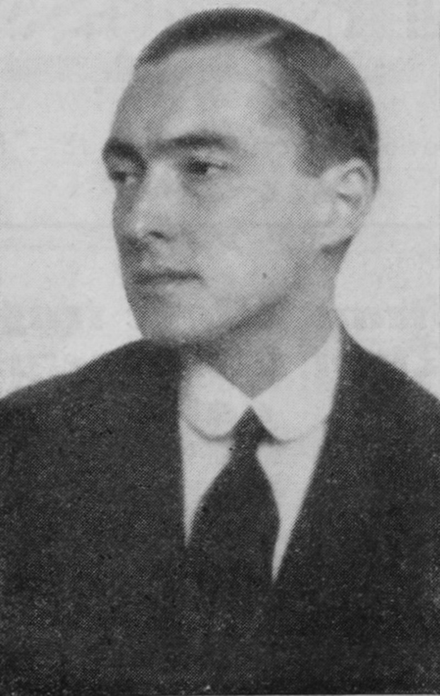

Organisierte Massenbewegung für die Einigung Europas — Gleichberechtigung, Sicherheit und Zollunion als Grundlagen
Wien, 13. Juli.

Richard Coudenhove-Kalergi
Wikimedia Commons
Die Paneuropäische Union beschreibt sich selbst als eine organisierte, überstaatliche Massenbewegung, die auf die Einigung Europas abzielt.[1] Als tragende Grundsätze nennt sie die Gleichberechtigung der europäischen Völker, die gegenseitige Sicherheit sowie den Gedanken einer Zollunion.[1] Das Zentralbüro der Bewegung ist in Wien ansässig. Dort nimmt es Anmeldungen und Anfragen entgegen.[1]
Der jährliche Mindestbeitrag für Mitglieder wurde auf 1,50 Schilling festgesetzt. Damit will die Bewegung ausdrücklich einen breiten Kreis von Teilnehmern ansprechen.[1] Der Gedanke der europäischen Einigung, für den der österreichische Politiker Richard Coudenhove-Kalergi seit Jahren eintritt, findet in Wien eine institutionelle Form. Er geht über bloße Pamphlete und Vorträge hinaus.
Historische Einordnung
Die Paneuropäische Union wurde 1923 von Richard von Coudenhove-Kalergi gegründet und hielt ihren ersten Kongress 1926 in Wien ab. Sie gilt als eine der frühesten organisierten Bewegungen für eine europäische politische Einigung. Ihre unmittelbaren politischen Wirkungen blieben in der Zwischenkriegszeit begrenzt. Viele ihrer Ideen — darunter die Zollunion und die gleichberechtigte Zusammenarbeit europäischer Staaten — lebten nach dem Zweiten Weltkrieg in den Gründungsverträgen der europäischen Integration fort.
Quellenverweise:
Neue Freie Presse(ANNO (Österreichische Nationalbibliothek))1926-07-13